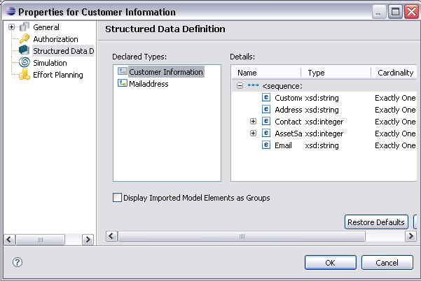
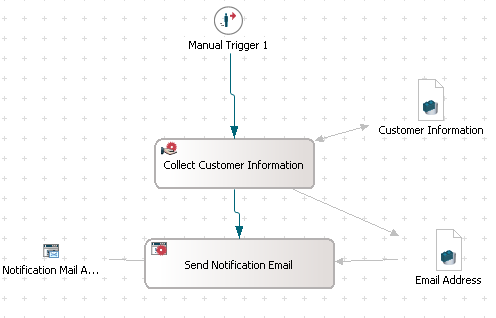
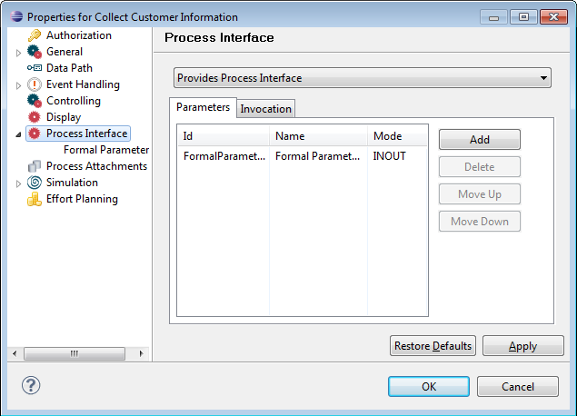

Creating a Provider Model
In this tutorial, we want to create a model which can be referenced in the other processes of
the organization. In this organization,
Customer Information collection is the common process which can be used across all the segments.
To achieve this, we need to define a process interface for the created process in the model.
You can create the model as described in the following section,
or import the completed example model provided by Stardust.
Creating the Model
Create a model in a dynamic Web project.
For detailed information on creating dynamic Web projects,
please refer to the
Rapid Application Development guide.
Perform the following steps:
Creating the Workflow
- Create a manual trigger
- Create a manual activity named Collect Customer Information
- Create a structured data Customer Information and provide in and out data
mapping between data and manual activity. Make sure that the Visibility Public option is selected. For more information,
please refer to the Composite Types
section of chapter Defining Structured Types
of the Modeling Guide.

Figure: Customer Information
- Similarly, create a structured data Email Address with Fromaddress and Toaddress fields and provide the
data mappings as shown in the model screenshot.
- Connect the manual activity to the application activity named Send Notification Email
- Define a mail application and connect it to the Send Notification Email activity.
Make sure that the Visibility Public option is selected. For more information, please refer to the
Properties section of the
Specifying Application chapter of the Modeling Guide.
- Define the Administrator as participant for the required elements in the model

Figure: Provider Model
Once the workflow is ready, you can define the process interface.
Defining a Process Interface
For the definition of the process interface, please refer to the chapter Glossary.
- In the Outline View, double-click the Collect Customer Information process.
The properties of the process definition get displayed.
- Click the Process Interface in the left pane and select Provides Process Interface
from the drop-down list.
- Click Add to define a Formal Parameter 1 of the process interface
- Select INOUT from the Direction drop-down list and select
Customer Information from the Data Type and
Data drop-down lists
- Click Apply and OK

Figure: Define Process Interface
For more information, please refer to the section
Defining Process Interface
of the chapter Working with Process Definitions
in the Modeling Guide.
Now your workflow and the process interface definition is ready.
Thus, the provider model is ready to be referenced in the consumer model.
In the next chapter of the tutorial, we will see how to create a consumer model.